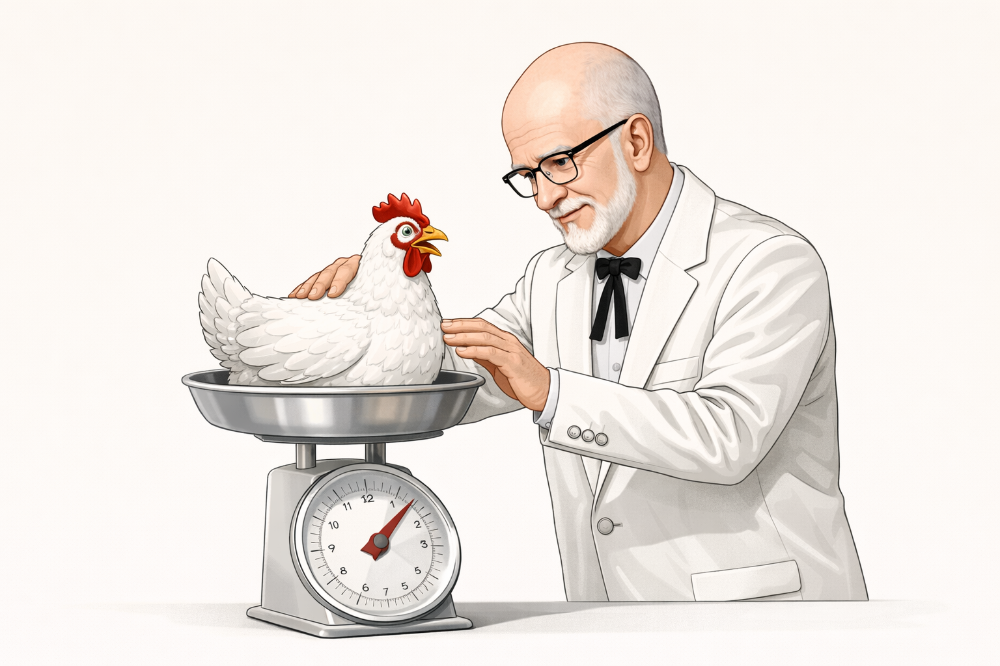

Given a set of values, we can estimate the probability of observing certain values by counting how many observations fall within a specific range. This count is called the frequency.
For example, the Colonel wants to estimate the probability that a chicken weighs more than 5 pounds. The Colonel weighed 32 chickens from the flock.

Of the 32 chickens weighed, 15 chickens weighed more than 5 pounds.
Therefore, the frequency of chickens weighing more than 5 lbs is 15.